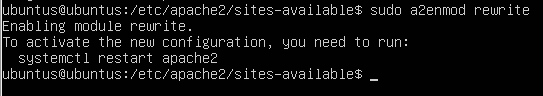
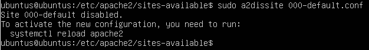
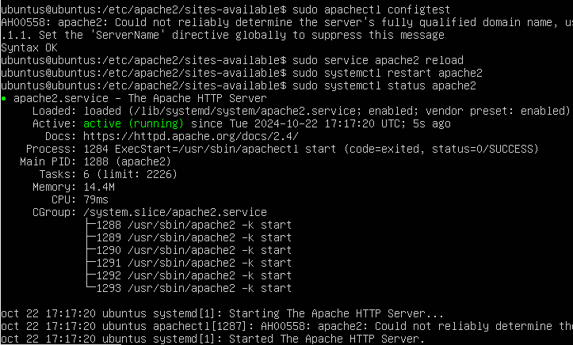
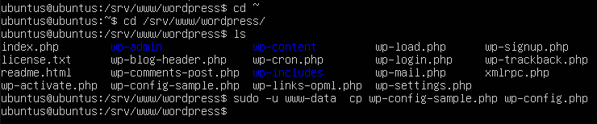
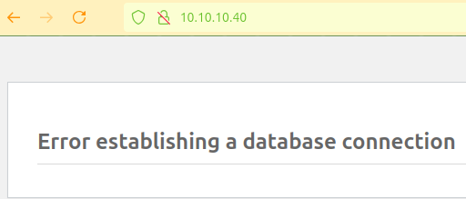

Instalar y configurar WordPress
Instalar máquinas
Instalamos 2 máquinas virtuales Ubuntu Server 22.04
en las egunda maquina hay que instalar el php, mysql-client, apache
Instalar dependencias
sudo apt update
sudo apt install apache2 \
ghostscript \
libapache2-mod-php \
mysql-server \
php \
php-bcmath \
php-curl \
php-imagick \
php-intl \
php-json \
php-mbstring \
php-mysql \
php-xml \
php-zip

Instalar WordPress
Vamos a crear el directorio de instalación, ha descargar el archivo de WordPress.org y ha instalar wordpress.
cd /srv
sudo mkdir www
sudo chown www-data: /srv/www
curl https://wordpress.org/latest.tar.gz | sudo -u www-data tar zx -C /srv/www


Configurar Apache para WordPress
Crearemos el siguiente sitio apache para wordpress:
cd /etc/apache2/sites-available
sudo nano wordpress.conf
<VirtualHost *:80>
DocumentRoot /srv/www/wordpress
<Directory /srv/www/wordpress>
Options FollowSymLinks
AllowOverride Limit Options FileInfo
DirectoryIndex index.php
Require all granted
</Directory>
<Directory /srv/www/wordpress/wp-content>
Options FollowSymLinks
Require all granted
</Directory>
</VirtualHost>

- Habilitamos el sitio:
sudo a2ensite wordpress

- Habilita la reescritura de URL con:
sudo a2enmod rewrite

- Deshabilitamos el sitio predeterminado:
sudo a2dissite 000-default.conf

- Recargamos y reiniciamos el apache2 para aplicar los cambios:
sudo service apache2 reload
sudo systemctl restart apache2
sudo systemctl status apache2

Configurar la base de datos MySQL
Para configurar WordPress, necesitamos crear una base de datos MySQL. La base de datos MySQL se ejecutará en un servidor distinto que Apache y PHP. Instalamos una máquina ubuntu server, le instalamos mysql y creamos o modificamos el usuario root.
Antes de seguir comprobamos que tenemos el mysql-server instalado
sudo apt update
sudo apt install mysql-server

Configurar MySQL para conexiones remotas
Para permitir conexiones remotas a MySQL, modificaremos la configuración de mysqld.
cd /etc/mysql/mysql.conf.d/mysqld.cnf
sudo nano mysqld.conf
Buscamos la linea de bind-address. Por defecto MySQL solo permite conexionews desde localhost (127.0.0.1). Modificamos el valor por la dirección IP de la máquina donde se está ejecutando el servicio de MySQL. Añadimos lo siguiente:
[mysqld]
bind-address = 0.0.0.0
La ip 0.0.0.0 permite conexiones desde cualquier interfaz de red que tenga la máquina.


Antes de seguir nos aseguramos de que tenemos el mysql-client instalado o no podremos hacer los siguientes pasos

Iniciamos sesión en MySQL:
sudo mysql -u root

Crearemos la base de datos para wordpress:
CREATE DATABASE wordpress;
CREATE USER wordpress@localhost IDENTIFIED BY '<tu-contraseña>';
GRANT SELECT,INSERT,UPDATE,DELETE,CREATE,DROP,ALTER
ON wordpress.*
TO wordpress@localhost;
FLUSH PRIVILEGES;
quit


Habilitamos MySQL:
sudo service mysql start

Configurar WordPress para conectarse a la base de datos
Configuremos WordPress para usar esta base de datos. Copia el archivo de configuración de muestra "wp-config-sample.php"a "wp-config.php":
cd /srv/www/wordpress
sudo -u www-data cp wp-config-sample.php wp-config.php

Establecemos las credenciales de la base de datos en el archivo de configuración:
sudo -u www-data sed -i 's/data_base_name_here/wordpress/' /srv/www/wordpress/wp-config.php
sudo -u www-data sed -i 's/username_here/wordpress/' /srv/www/wordpress/wp-config.php
sudo -u www-data sed -i 's/password_here/<tu-contraseña>/' /srv/www/wordpress/wp-config.php
Remplazaremos "tu-contraseña" por ls contraseña de la base de datos. En mi caso es: Wordpress1

Iniciamos sesión desde la terminal al archivo de configuración:
sudo -u www-data nano /srv/www/wordpress/wp-config.php
Buscaremos las siguientes lineas y las editaremos poniendo lo siguiente:
define( 'AUTH_KEY', ')@n$*|p6+>Wo?~gum<}s@dU;_lg|1)H|u2gA]lRf[ Z@|D|-:^?yo}z~^9QK;^7!' );
define( 'SECURE_AUTH_KEY', 'u7s} L]`|!z}BIgW*VmP0[I[m2lrT!RJa-+Gv!MBTZSjL=8?41q+$9vo6_E#2a$P' );
define( 'LOGGED_IN_KEY', '/M|NLLsceq,{D*[YcagBEk-#{_m=N,Q}@S5fvXpqAP!z`s)b|&VU4E|I|]|- ho+' );
define( 'NONCE_KEY', '$T>tanzlP]O]nd0`-;@X!<=/MGE)v6*}(^bJ|LleVQFjhKCUM?v4whPV3_eJ{!{>' );
define( 'AUTH_SALT', 'S($ n4uB*;FvZrTt-|y|`dcv-@n.ekq,0E*jK~R{zP6(YpvKHoU(;7f(~$nLJXui' );
define( 'SECURE_AUTH_SALT', 'v=#DY[Y?`U3[=U+G6[ugqP(6b;34YTc.70+y9+fFYBr2.2-,D?R}okt28l0[m9:{' );
define( 'LOGGED_IN_SALT', 'TX/)e] =1&Qr$Hm&].+-9w%X|DEG)e9C1R|of)?0XuZg](v;V/+DA2h(0E?+id3M' );
define( 'NONCE_SALT', '`3bW?83^pcJP6i12/c|nf(=)l_!bQ?t-r`lt5:VA+5|Jq{ee>%?7i/XnxkB@}tl_' );

Configurar WordPress
Abrimos nuestro navegador y ponemos lo siguiente para conectarnos al servidor donde tenemos la base de datos:
http://10.10.10.40/

He tenido un problema y me sale un error

Nos pedirá:
- Título de tu nuevo sitio
- Nombre de usuario
- Contraseña
- Dirección de correo electrónico
Ten en cuenta que el nombre de usuario y la contraseña que elijamos aquí son para WordPress, y no proporcionan acceso a ninguna otra parte de tu servidor.
Elegimos un nombre de usuario y contraseña diferentes de las credenciales de MySQL y
de las credenciales para iniciar sesión en el equipo o escritorio o shell del servidor.
- Ahora ya podemos iniciar sesión:
http://10.10.10.40/wp-login.php